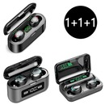
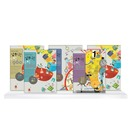
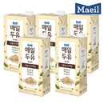
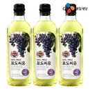

 무선 블루투스 5.0 이어 31,500 28,800  시매쓰 상위권 수학 96 30,000 28,500 서머너 S1PRO 콤보 59,900 29,800 냉동번데기 생번데기 번 13,800 6,900  매일두유 99.89 식물성 7,900  포도씨유 900ml 3개 17,400
탭 인터페이스 라디오버튼은 하나의 그룹으로 묶은 버튼들 중에서 1개만 선택(체크) 상태가 되는 특징이 있습니다. 이런 특징을 활용하면 목록으로 표현되는 컨텐츠를 작은 영역 안에서 탭(Tab)으로 전환해가면서 볼 수 있는 UI를 만들 수 있습니다. 탭 인터페이스는 현재 선택된 탭 1개의 컨텐츠만 보이는 구조이기 때문에 라디오버튼의 특징을 활용하면 자바스크립트 없이도 탭 인터페이스를 구현할 수 있습니다.